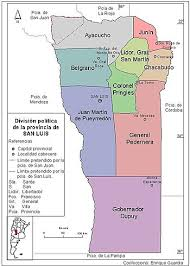

SAN LUIS
HISTORIA
Aunque se ha perdido el acta de fundacion de la ciudad,y con noticias entrecruzadas de la época,redactadas en diversos documentos
manejados con pocas prudencia.se han detectado errores en el proceso de fundación de la ciudad,transformandose este modo en un
oasis de leyendas,misterios y cuentos populares,que adoptaron el camino de las repeticiones boca a boca.
GEOGRAFIA

La cuidad de San Luis esta ubicada sobre la ladera del extremo suroeste de las sierras de San Luis.Este cordon serrano se desprende
de las sierras pampeanas ,y al sur es cruzado el rio Chorrillos.
TURISMO
El microcentro tiene un estilo colonial español de veredas,calles angostas y edificios de dos plantas,Se puede observar la ex
estacion de tren del ferrocarri que unía las cuidades de Buenos Aires con Mendoza,construida en el año 1882 en estilo neoclá
sico francés,que convive con modernas construcciones en torre de varias plantas.
CLIMA
San Luis tiene un clima templano y semiarido.
En verano los dias son calurosos y a veces húmedos,son frecuentes las tormentas eléctricas luego de dias de calor agobiantes.
El invierno tiene dias templados-fresco y noches frias.Según la clasificación climática de koppen el clima de San Luis esde tipo
BSk.